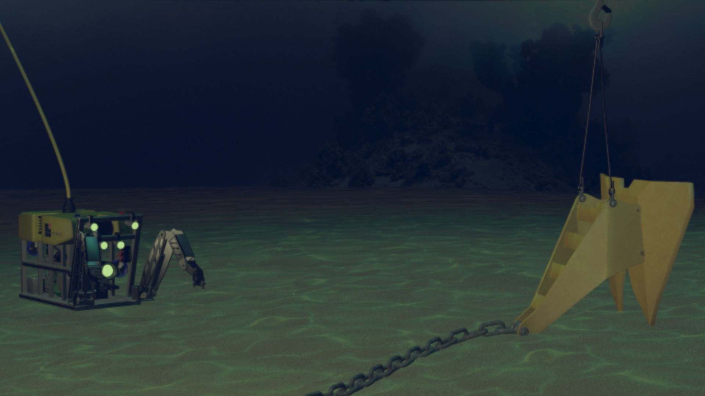
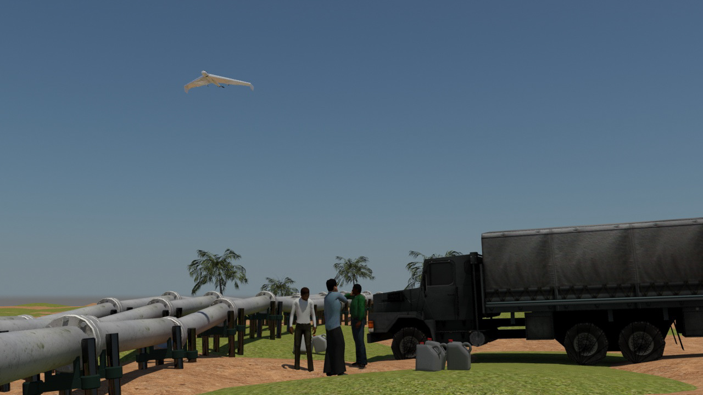
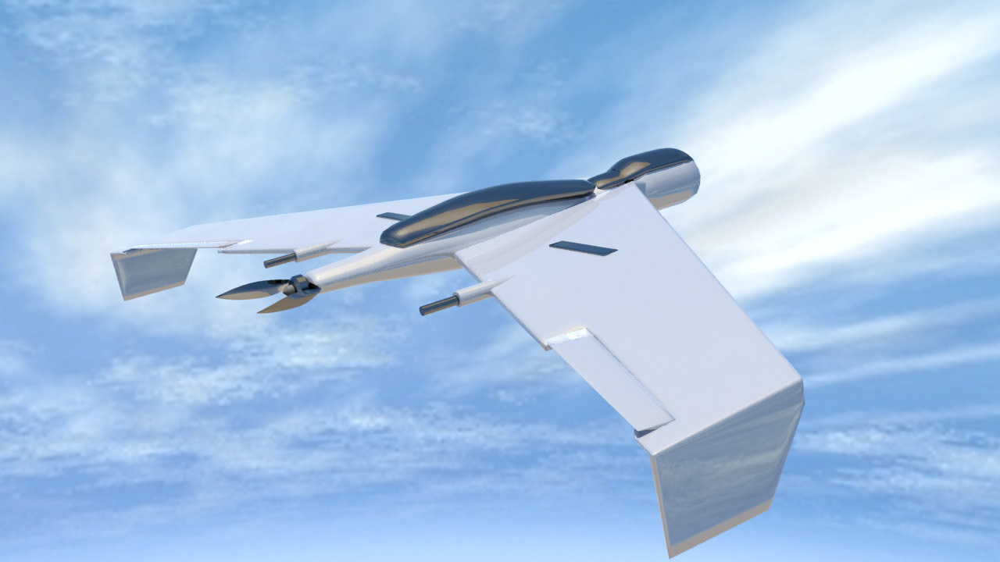
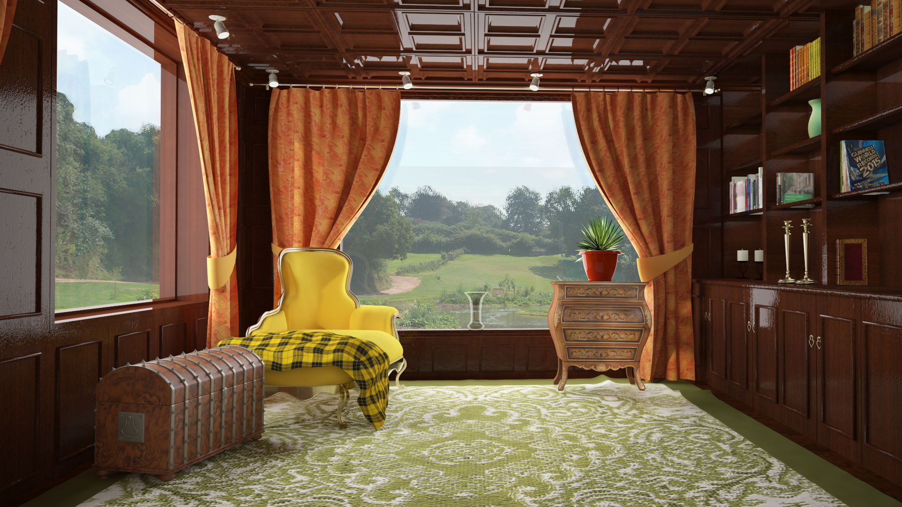

Cross-Domain 3D Modeling • Simulation Systems • CGI
Creative Spatial Systems & 3D Modeling Showcase
A diverse technical portfolio demonstrating high-precision 3D computer graphics across extreme engineering environments—from subsea robotics and offshore mooring to aerial UAV surveillance and architectural visualization.
1. Subsea Robotics & Mooring Simulation
Marine and offshore environments present extreme visualization challenges: zero natural sunlight, turbulent underwater caustics, and complex articulated robotic mechanics.
This project engineered a high-fidelity Remotely Operated Vehicle (ROV) modeled from subsea industrial schematics. The vehicle was fully rigged for animation to simulate umbilical tether dynamics, thruster motion, and interaction with deep-water anchor mooring systems.


2. Aerial UAV Surveillance & Pipeline Monitoring
Visualizing industrial monitoring workflows for remote infrastructure in the Niger Delta. The simulation required modeling the physical pipeline network, illegal tap points, aerial UAV telemetry, and a fully rendered centralized control room.


3. Architectural Visualization & Environmental Lighting
Leveraging advanced lighting calculation, physically based materials (PBR), and cloth simulation to achieve photorealistic architectural atmospheres:


4. Engineering Craft & Key Takeaways
Domain Agnostic
Demonstrated ability to swiftly understand diverse technical schematics from subsea robotics to aerospace UAVs.
Production Ready
Clean topology, optimized polygon budgets, and physically accurate shading ready for both offline renderers and 60 FPS real-time engines.
Foundation for Digital Twins
These hard-surface and environmental foundations directly enable the construction of enterprise-scale digital twins.